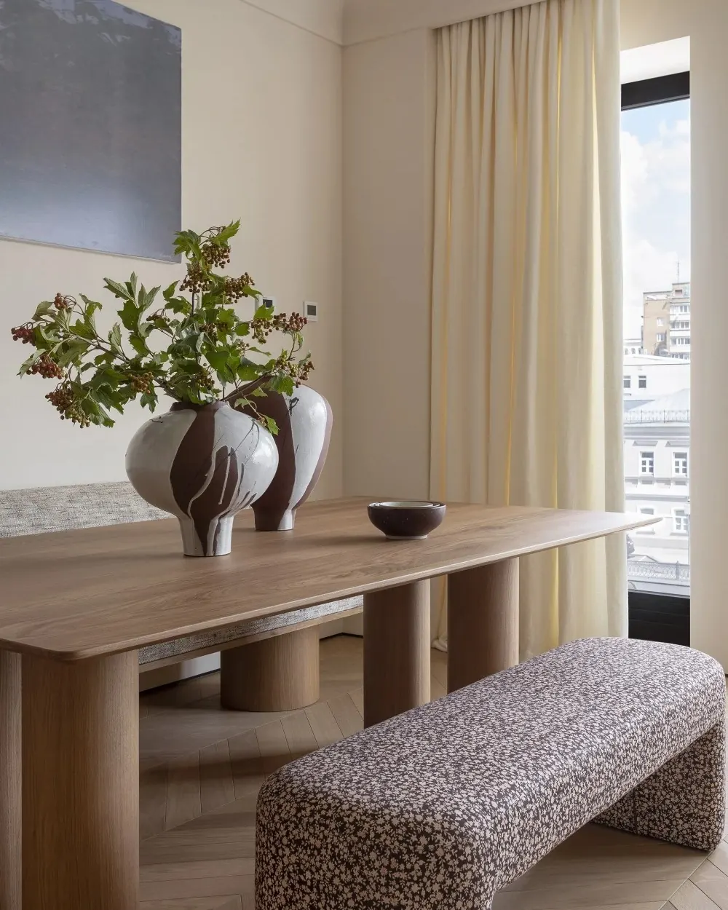
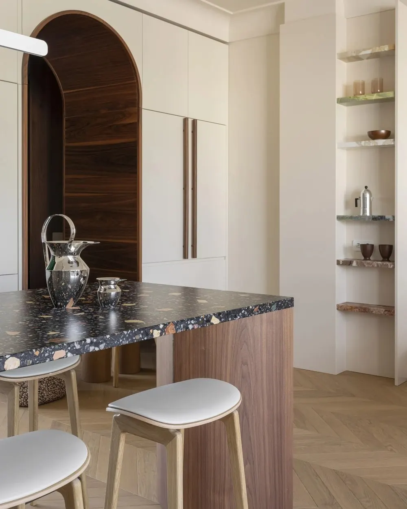
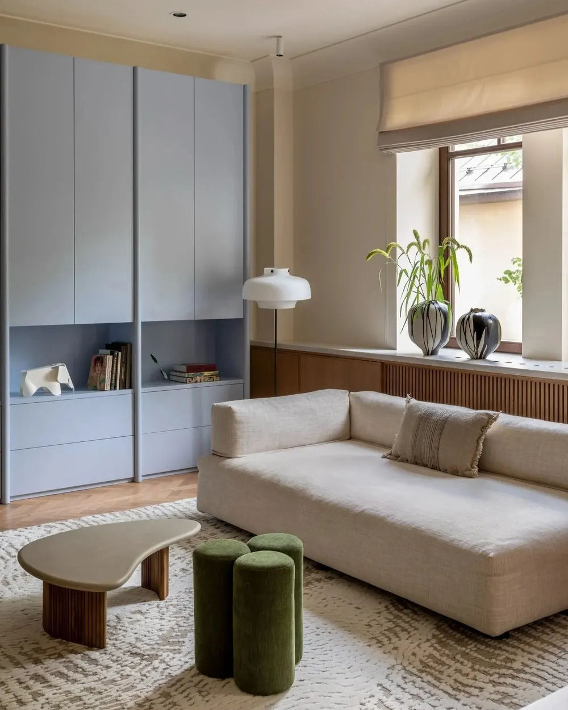
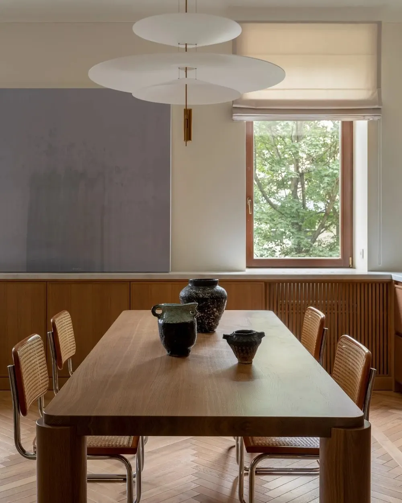
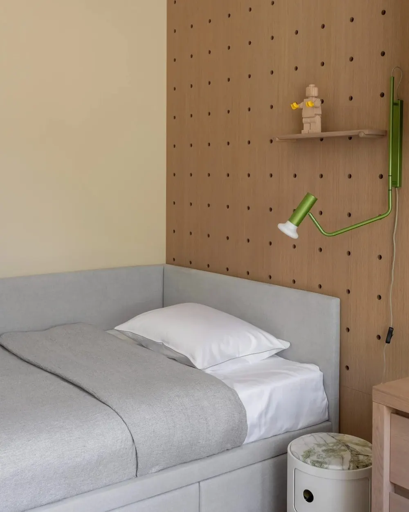
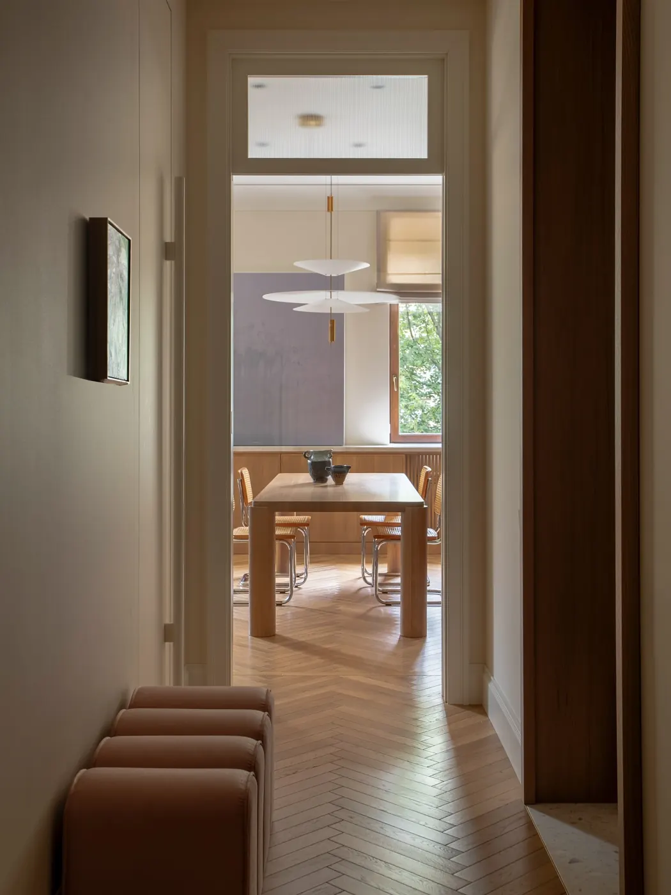
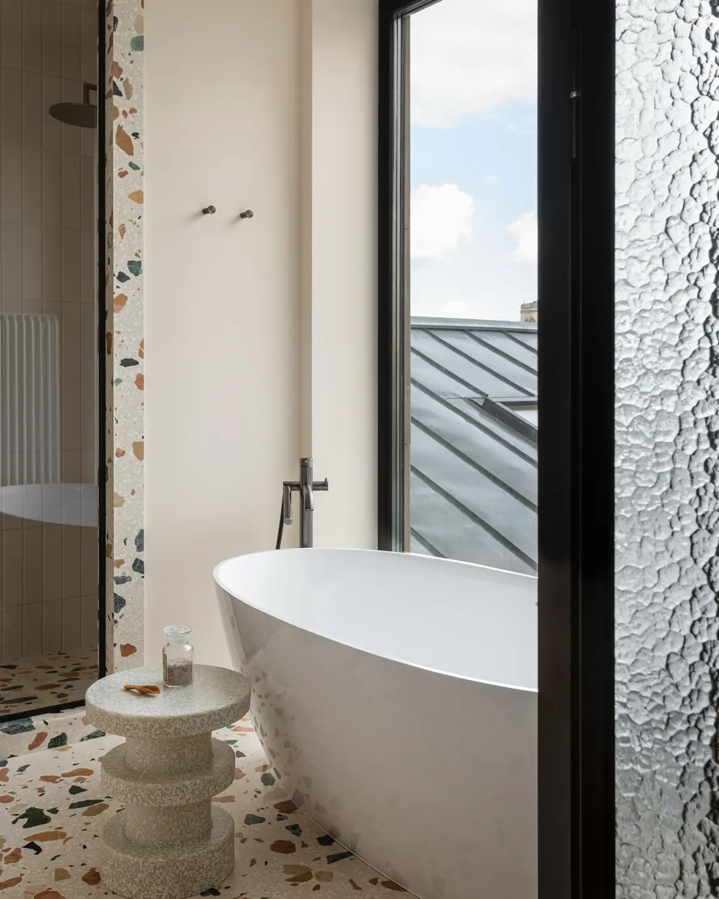
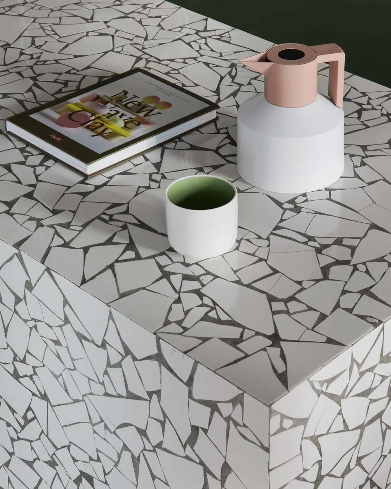
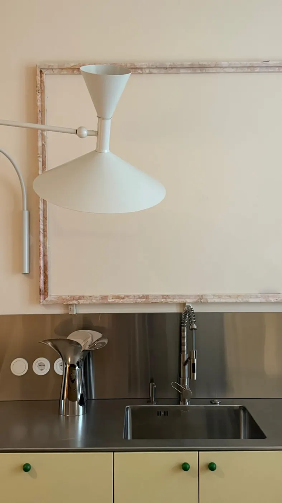

Квартира для художницы
Новый дом в центре, вид на Москву-реку, ни одной несущей стены. Гостиная в сливочной гамме — фон для искусства, яркие акценты — в кухне и второстепенных комнатах.
Интерьеры Анастасии Брандт из AD Russia TOP 100: квартира, дом, офис, кафе, клиника, отель. Опыт общественных пространств — в жилых проектах.
Обсудить проект
Квартира для семьи с тремя детьми. Интерьер строится вокруг идеи дома, который подстраивается под меняющиеся потребности владельцев: лаконичная архитектура, продуманное хранение, натуральные материалы.


«…в мире стало на один дом мечты больше»


«Дом — это не спецификация с мебелью, краской и плиткой. Это энергия, атмосфера, состояние, в котором семья просыпается, проживает важные моменты, отмечает события, дарит друг другу внимание и любовь. И просто живёт».

Новый дом в центре, вид на Москву-реку, ни одной несущей стены. Гостиная в сливочной гамме — фон для искусства, яркие акценты — в кухне и второстепенных комнатах.

Тёмно-зелёная ванная с аркой и отдельно стоящей ванной — из подборки реализованных проектов бюро.

«Даже с небольшим бюджетом можно сделать круто»: весь проект — 3 миллиона рублей.

Один из четырёх проектов 2026 года — квартира в старом фонде. Бюро показывает путь от идеи до реализации.
Кроме квартир — клиника TECHNE, кафе и проекты на Патриарших.
Квартира, дом, кафе, клиника или отель — напишите Анастасии, что за пространство и сколько в нём метров.